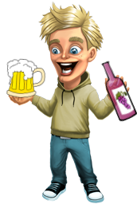

Добре дошли в нашата онлайн кръчма! За съжаление натряскването по мрежата, все още е невъзможно, но ние се надяваме, че един ден наш студент ще открие начин да си поркаме по интернет, без да трябва да се редим на досадни опашки в супермаркета, и естествено ще получи Нобелова награда за това (но това едва ли е важно при положение, че можеш да се напиеш по Интернет). Все пак нашата цел е един ден да превърнем България в Алкохолната долина на Балканите!